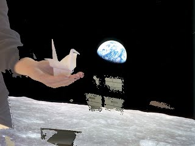
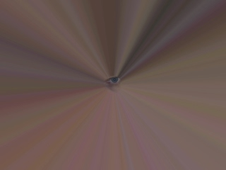
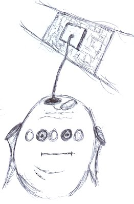

|
Journal - "Listening for Harmony"
My crane is worried about the controlling attitude by man over this world. A crane brings luck, but only if we listen to Nature, working in harmony with Her. Then all we have to do is accept her luck. 
Many people feel the same way, and there are many discussions, and many visionary ideas.
But there are constant clashes in opinion of how to live sustainably, and most of it from the premise that we need to control everything. Control is opposite of harmony. It is opposite of creativity. Both harmony and creativity are nurtured. So why this obsession with control? Perhaps control makes us feel secure in fearful world. So why did we become so fearful of everything? Perhaps because of the programming we received growing up. We were taught that the world is a frightening, where things were dangerous and bad, so we spent the rest of life reinforcing those original beliefs. (In my cartoon, the being is getting programmed.) 
Perhaps it could be beneficial to view the world as a safe and joyous place, filled with love, and then reinforce instances we see this every day. Living everyday, listening to Nature, so we can fit into our environment, without
leaving footprints. Everything remains healthy, fresh and sparkling.... as I listen to Nature blog by Anda 2011 Journals Home |